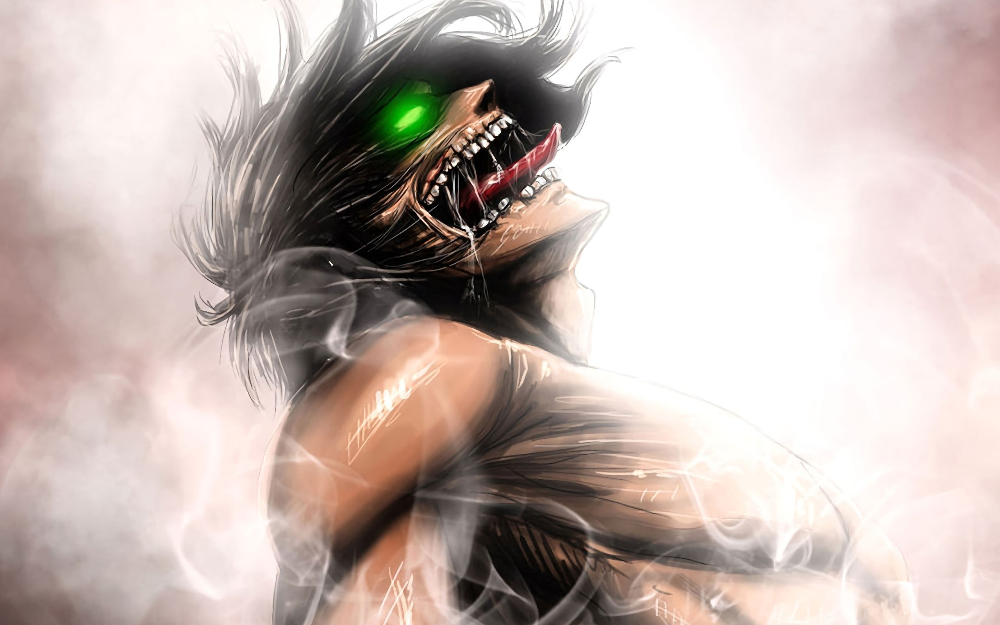

---- About Eren ----
Eren is best described as hardheaded, strong-willed, passionate, and impulsive, which are attributes of both his strong determination to protect mankind and, eventually, his equally strong determination to escape the Walls. Even as a young child, he was so intent on joining the Survey Corps that he argued with and shouted at his mother, referring to the people in the village as "silly" and comparing them to complacent livestock.
Eren Yeager in Titan Form
Eren's characteristics
- Argue and anger issues
- Momdeath trauma
- Purposeful
- Ready to die for his friends
- Youthful maximalism turns into adult view at the world
Eren's Friends
Eren cares deeply for his friends and family, risking harm and even death in order to protect them.He had a few friends, although his best friend was Armin Arlert, whom he often defended from the neighborhood bullies.